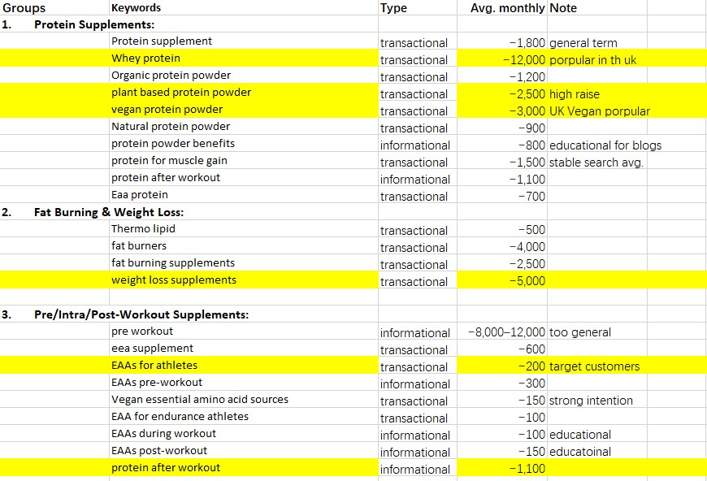

Hi, This project shows my SEO skills.
All data were obtained from Moz, ScreamingFrog, SEMrush, and other similar tools. Some data were limited due to free/trail versions of tools
A SEO Project for Suppslocker
SEO Project for Suppslocker
A Persona of Suppslocker
- Gender: Male
- Age: 25-35
- Education: College and higher
- Interests: Sports, training, health, healthy food, fitness equipment
- Discover channel: Online search, Instagram, TikTok, word of mouth
- Location: Major UK urban areas with access to gyms
Issues to solve: Faster recovery and enhanced performance; build lean mass and cut fat; reduce nutritional gaps and maintain health.
Behavioral patterns: Online shopping, influencer trust, quality-conscious and self-educated, unlikely to choose cheap products.
Persona Example: Allen is a health-driven, college-educated male aged 30, residing in Manchester urban centre with easy gym access. Deeply immersed in fitness culture, he prioritises athletic performance, lean muscle growth, and efficient recovery. Nutritionally aware, he actively seeks solutions to bridge dietary gaps and optimise body composition—focusing on fat loss and sustained vitality. His interests span sports science, gym equipment, and clean nutrition, driving him to self-educate on ingredients and efficacy. Digitally-engaged, he discovers products via online searches, fitness influencers on Instagram/TikTok, and peer recommendations. While quality-conscious and wary of cheap alternatives, he trusts expert reviews and brand authenticity. As an online shopper, he invests in premium supplements that deliver tangible results, valuing transparency, scientific backing, and seamless e-commerce experiences. His purchasing behaviour reflects a commitment to long-term fitness goals over short-term savings.
Website Overview
- Industry: E-commerce
- Products: Supplements for athletes
- Pages: 78
Pros
- Technical: HTTPS, mobile-friendly, XML sitemap
- On-page: Relevant title tags, detailed content, quality visuals, relevant keywords
Cons
- Technical: No clear HTML sitemap
- On-page: Empty blog page, missing or duplicate metadata and H1s, no long-tail keyword targeting, no UGC
- Off-page: Lacks good backlinks, limited social media
SEO Opportunities
1. Metadata and Title
Problem: Duplicate or missing metadata
Reason: Specific data points search engines and users to understand site content
Solution: Optimize meta descriptions and title tags.
2. Long-Tail Keywords
Problem: Lack of long-tail content
Reason: Long tail keywords help site stands from mass market competitors
Solution: Add blog/guides; link internally to key pages.
3. Backlinks
Problem: Weak or poor-quality links
Reason: Good backlinks help site rankings and bring more visitors Solution: Influencer outreach
Solution: Outreach to influencers, bloggers, and partnerships.
4. Content Marketing
Problem: Blog page is empty
Reason: Good content attracts visitors and improves rankings; helps to get more backlinks
Solution: Convert product content into blog posts and educational guides.
5. User-Generated Content
Problem: No customer reviews
Reason: build customer engagement, trust and testimony
Solution: Encourage reviews through incentives.
6. Social Media
Problem: Only has Instagram
Reason: To attract visitors; reach potential customers; expend content life span
Solution: Expand to TikTok and Facebook to increase engagement and reach.
Result: Addressing these opportunities will improve SuppsLocker’s online visibility and brand authority in the UK supplement market.
SEO Metrics Questionnaire
- Who are your target customers?
- What are your goals for the website?
- Have you worked with any SEO agency before?
- Do you have data from past SEO efforts?
- Do you use any SEO platforms?
- Do you have your own SEO data?
- Do you have a keyword list?
- Are there keywords you want to rank for?
- What are your best-selling products?
- Will you develop your blog?
- Will you expand your social media?
- Will you collaborate with influencers?
- Will you build backlinks?
- Do you have event content (hosted/attended)?
- Do you want to rank locally or globally?
Keyword Research
Keyword List:
Hd muscle,
Amino acids supplement,
Organic protein powder,
Protein supplement,
Whey protein,
Protein for muscle gain,
Complete supplement,
Natural protein powder,
Multi collagen protein,
Supplement,
Thermo lipid,
Eaa,
Essential amino acids,
Eaa protein,
EAAs for athletes,
EAAs for fatigue,
Vegan essential amino acid sources,
Top EAA brands,
Vegan EAA supplement,
EAAs post-workout,
EAAs pre-workout,
EAAs during workout,
EAA for endurance athletes,
Burn hd,
Plant based protein powder,
Muscle gain,
Vegan protein powder,
Protein powder benefits,
Natural appetite suppressant,
Fat burners,
Fat burning supplements,
Weight loss supplements,
Pre workout,
Organic vitamins,
Clean label supplements,
Holistic health supplements,
Muscle recovery supplements,
Post workout recovery,
Reduce muscle soreness,
Protein after workout,
DOMS (delayed onset muscle soreness),
Muscle recovery after workout,
Joint health,
Brain health supplements
Keywords Analysis


Keywords & Competitors
Competitor Analysis
Opportunities for Suppslocker
- Category pages need keyword-rich titles
- Fix duplicated titles and H1s
- Utilize blog page properly
- Build internal linking to product pages
- Encourage customer reviews
Internal Content Audit
Recommendations
- Create keyword-rich titles and CTA-driven meta descriptions for every product
- Add a "Science Behind" section with clinical study citations
- Include Trustpilot reviews and user video testimonials
- Add 3-5 contextual product links in each product description
- Create a "Supplement Stack Guide" to educate and cross-sell